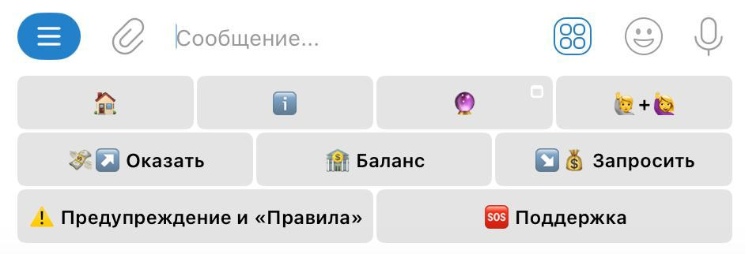
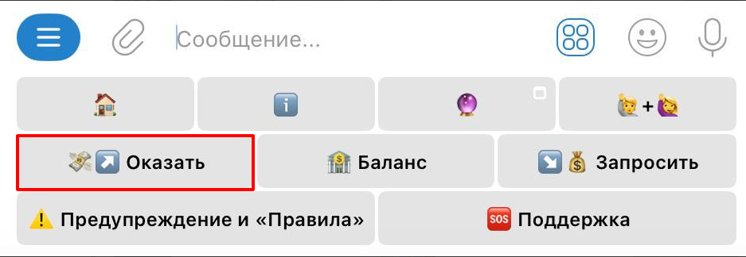
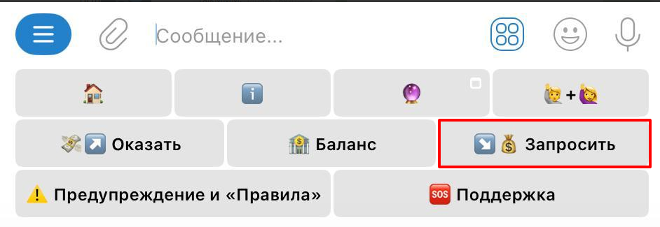

Регистрация в телеграм-боте
Вернуться в раздел "Полезные инструкции"
Перешлите памятку себе в Избранное. Давайте инструкцию новичкам!
Участвовать в МММ 2.0 строго через телеграм-бот, адрес которого Вам сообщат в телеграм-боте – 🔔 Поставьте звуковое оповещение на этот бот, чтобы не пропустить сообщения 🔔
❗️Прежде всего, прочтите ПРЕДУПРЕЖДЕНИЕ и «правила»
ВАЖНО: Если нижнее меню с кнопками в боте не видно (иногда бывает), – введите в боте команду /start
🤖 В нижнем меню бота Вы увидите две кнопки: "↗️💸ОКАЗАТЬ помощь" и "↘️💰ЗАПРОСИТЬ помощь".

↗️💸 Если хотите участвовать, нажимаете "↗️💸ОКАЗАТЬ помощь":

1️⃣ Указываете сумму оказываемой помощи и валюту участия: рубли – если Вы из России, USDT – если из-за рубежа. Это у нас называется "интент" (от англ. intent - "намерение") - Ваше намерение оказать помощь.
2️⃣ Через некоторое время бот начнет Вас стыковать с участниками, которые запрашивают помощь, и будет присылать Вам их реквизиты и суммы: от бота последовательно будут приходить поручения на разные суммы в рамках общей заявленной Вами суммы на оказание помощи, и Вам нужно будет переводить людям свои средства (через онлайн-банк или криптокошелек, в зависимости от валюты участия). В некоторых случаях может быть и одно поручение на всю сумму заявленной помощи.
3️⃣ После каждого перевода Вам нужно отметить поручение выполненным, нажав на соответствующую кнопку в боте, – у получателя появится возможность подтвердить Ваш перевод. Если получатель не подтверждает получение в течение 48 часов, открывайте "спор" и пишите по кнопке 🆘Поддержка. Консультант может попросить написать ему в личку, - в этом случае будьте готовы предоставить консультанту видео с экрана телефона с онлайн- банком, подтверждающее отправку средств. Такое бывает крайне редко.
‼️Если Вы не совершите перевод, но оформите в боте, что совершили его, то будете по умолчанию забанены Системой.
4️⃣ После подтверждения со стороны получателя по каждому поручению бот будет присылать Вам сообщение с предложением конвертировать подтвержденные Мавро-0% в Мавро-20%. Это сразу же необходимо делать, иначе Ваши Мавро не будут "расти".
🥶То же самое касается реферал-бонусов: по мере их разморозки бот Вам будет предлагать их конвертировать в Мавро-20% либо запросить по ним помощь.
5️⃣ После того, как Вы отправите всю сумму заявленной Вами помощи по разным поручениям и конвертируете все свои Мавро-0% в Мавро-20%, – просто ждёте, пока Ваши абстрактные Мавро "подрастут".
↘️💰 В любой момент Вы можете запросить помощь уже с набежавшими процентами: полностью или частично "продать" свои абстрактные Мавро-20%. Для этого нажимаете кнопку "↘️💰ЗАПРОСИТЬ помощь".

1️⃣ Определитесь с суммой запрашиваемой помощи и конвертируйте абстрактные Мавро-20% в Мавро-0% на эту сумму. "Продать" можно только абстрактные Мавро-0%. Оставшиеся Мавро-20% продолжат свой "рост".
2️⃣ Далее бот попросит указать свои точные реквизиты банка или криптокошелька. Внимательно заполните реквизиты. Вы можете указать несколько реквизитов и для удобства присвоить им названия.
3️⃣ После оформления запроса помощи бот уже Ваши реквизиты и суммы будет отправлять по участникам, которые в настоящий момент оказывают помощь.
‼️ По каждому поручению ОПЕРАТИВНО подтверждайте получение в боте только после того, как средства реально поступят на Вашу карту или криптокошелек.
Если отправитель укажет, что отправил деньги, но реально они Вам не поступили в течение 48 часов, – незамедлительно пишите по кнопке 🆘Поддержка. Консультант может попросить написать ему в личку, – в этом случае будьте готовы предоставить консультанту видео с экрана телефона с онлайн-банком, подтверждающее, что деньги Вам не поступали. Такое бывает крайне редко.
4️⃣ После того, как Вы получите всю сумму запрашиваемой помощи, Вам необходимо записать видеоотзыв (можно без лица, подробнее об этом прочтите в п.13 "правил") и отправить его в личку помощнику @GenXmanager1
Инструкция, как записывать видеоотзывы по ССЫЛКЕ.
BazaMavrodi.com - Мы Можем Многое! Вместе✊🏼
Вернуться в раздел "Полезные инструкции"
Регистрация в телеграм-боте